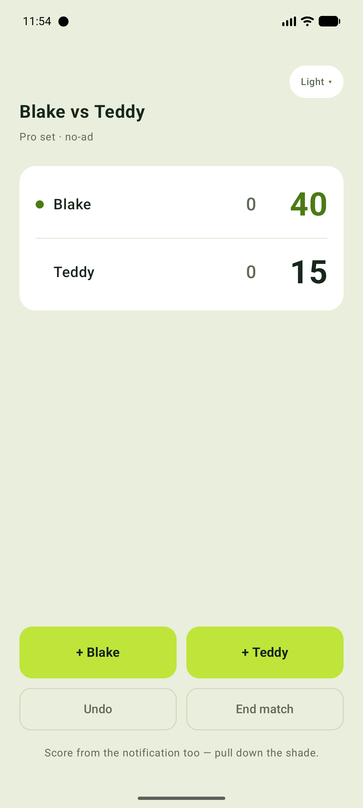
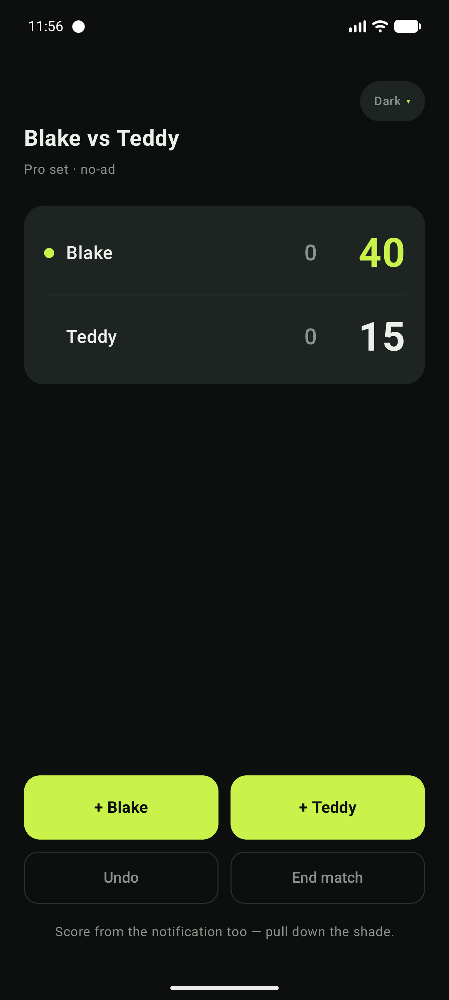

A tiny scorekeeper that lives in your notification shade. Tap to add a point mid-rally — never open the app, never lose your phone.


Score with the notification's own buttons. The app never has to be open — your phone stays yours.
Sporty light, slick dark, or follow the system. It remembers what you pick, notification and all.
No-ad pro sets, tiebreaks, deuce, serve tracking, unlimited undo. The scoring is provably correct.
No store, no sign-up. Just sideload it.
tennis-scorer.apk.Android only. Each phone shows the install prompt once — that's Android keeping you safe with anything outside the Play Store.